Simplicial
7 Bisimplicial Sets
A bisimplicial object is a simplical simplicial object.
-
Example 7.0.2. Given a monoidal category, the external product of two simplicial objects \(X\tilde {\otimes } Y\) is the one given by \((X\tilde {\otimes } Y)(n,m)=X_n\otimes Y_m\). For simplicial sets, the product is a monoidal product, and in this case we denote the external product \(X\tilde {\times }Y\). The diagonal simplicial object of a bisimplicial object \(X\) is \(X(n,n)\).
We define the vertical simplicial object of \(X(n,m)\) to be \(X_n = X(n,*)\). A morphism \(\theta :m\to n\) gives rise to a diagram of simplicial sets
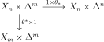
There is a map \(\gamma _n:X_n\times \Delta ^n\to d(X)\) given by sending \(x,r \mapsto r^*(x)\).
-
Proof. On \(r\)-simplices, this coequalizer computes \(\colim _{\Delta ^{op}/{[r]}}(X_n)_r\), which is just \((X_{r})_r\) since there is a terminal object. □
Lemma 7.1 gives a natural filtration on \(d(X)\) coming from the image of \(\coprod _{n\leq p}X_n\times \Delta ^n\).
Moreover, the degenerate part of \(X_{p+1}\) with respect to the horizonal simplicial structure is filtered by \(s_{[r]}X_p\) which is the union of \(s_iX_p\) for \(i\leq r\).
-
Proof. There are pushout diagrams
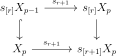
which are homotopy pushouts since the indicated arrows are injections. Thus by induction it follows that the map \(d(X)^{(p)}\to d(Y)^{(p)}\) is an equivalence for all \(p\), and taking the union, we are done. □
Let \(D\) be a category with coproducts, and \(C\) any small category. Given a functor \(f:C \to D\), there is a simplicial object \(E_Cf\) whose \(n\)-simplices are \(\coprod _{\sigma :[n] \to C}f(\sigma (0))\) called the translation object.
Given a composite \(C' \xrightarrow {g} C\xrightarrow {f} D\), there is a natural map \(E_{gf} \to E_f\). Moreover, given a natural transformation \(f\to g\), there is an associated map \(E_f\to E_g\).
Finally, observe that the simplicial object corresponding to the composite \(C\times C' \xrightarrow {\pi } C\xrightarrow {f} D\) is \(E_f\otimes BC'\) where \(\otimes \) is the usual tensoring of simplicial objects by the simplicial set \(BC'\).
In this case, the \(n\)-simplices of \(E_Cf\) are the nerve of a category \(E_Cf_n\) whose objects are an object \(c \in C\) and an \(n\)-simplex in \(f(c)\). This category is called the translation category.
7.1 Bisimplicial objects in an abelian category
-
Proof. The identity of \(I\) is homotopic to the constant map \(t\), so applying this to the translation object construction, we get that \(Ef\) is simplicial homotopic to \(K(A_t,0)\otimes BI \cong K(A_t,0)\) since \(I\) is contractible. □
By the Dold-Kan correspondence, bisimplicial objects in an abelian category are the same as chain complexes of chain complex \(C_{p,q}\) with a horizontal and vertical differential \(\partial _h\) and \(\partial _v\) that commute. By changing \(\partial _v\) to \((-1)^{p} \partial _v\), they anti commute and form a double complex. This gives an equivalence between first quadrant double complexes and bisimplicial objects.
Filtering a double complex in the horizontal direction gives a spectral sequence whose \(E_2\)-term is \(H_p(H_q C_{**})\), converging to \(H_{p+q}(\Tot (C_{**}))\) with a finite filtration in each degree. It follows that the homology of \(\Tot (C_{**})\) is only dependent on the weak equivalence classes of the chain complexes in the vertical direction. There is also a diagonal simplicial chain complex \(d(C)\) corresponding to the diagonal simplicial set. It is more convenient to work with the Moore complexes, since then \(d(C)\) is just given by \(C_{nn}\) with the Moore differential \(\sum _i (-1)^i \partial ^h_i\partial ^v_i\).
-
Proof. It suffices to work with the Moore complexes by Proposition 6.5. There is a map \(f_{p,q}:C_{n,n} \to C_{p,q}\) where \(p+q=n\) given by \(\partial ^h_{p+1}\dots \partial ^h_{n}\partial ^v_0\dots \partial ^v_0\). Consider the Alexander-Whitney map given by \(\sum _{p+q=n}f_{p,q}: dC_n\to \Tot (C)_n\). This gives a chain map \(\Tot (C_{**}) \to D(C_{**})\). The Eilenberg-Zilber map in the other direction is given from \(C_{p,q} \to C_{n,n}\) by \(\sum _{\mu } (-1)^\mu s^h_{\mu (n)}\dots s^h_{\mu (p+1)}s^v_{\mu (p)}\dots s^v_{\mu (1)}\) where \(\mu \) ranges over the set \(S_{p,q}\) of \((p,q)\) shuffles. One can check that the Eilenberg-Zilber map composed with the Alexander-Whitney map is the identity. An explicit homotopy for the other composite to the identity is given by the Shih operator map \(C_{m,m}\to C_{m+1,m+1}\) that in degree \(0\) is \(0\) and in positive degree is (signs and/or indices may be wrong):
\[ \sum _{q,p,\mu } (-1)^{m'+1+\mu }s^h_{\mu (n)}\dots s^h_{\mu (p+2)}\partial ^h_{m-q+1}\dots \partial ^h_m s^v_{\mu (p+1)}\dots s^v_{\mu (1)}\partial ^v_{m'}\dots \partial ^v_{m-q-1} \]
where \(m' = m-p-q\), \(0\leq q <m, 0 \leq p <m-q, \mu \in S_{p+1,q}\). There are more conceptual arguments for this, but it is interesting to know there is an explicit universal formula for the chain homotopy. □
-
Proof. There is a bisimplicial abelian group which in vertical degree \(m\) is the translation object \(EA(*,m)\) associated to the functor \(A(*,m):(\Delta _{/[m]})^{op}\to D\). Since \(\Delta _{[m]}^{op}\) has a terminal object, there is a canonical homotopy equivalence by Lemma 7.4 from \(EA(*,m)\to K(A(m.m),0)\). By letting \(m\) vary, we get a canonical weak equivalence \(\Tot EA(*,*)\to d(A)\).
In horizontal degree \(k\), the simplicial object is \(\oplus _{f:[k]\to \Delta ^{op}} \Delta ^{f(0)}\otimes A(f(k),*)\), so it follows that this is invariant under weak equivalences, so the total complex, and hence \(d(A)\), is too. □
Define the horizontal normalization \((N_hA)_n\) to be the simplicial chain complex whose \(n\)-simplices are \(N_hA_n:=NA(*,n)\). There is the Postnikov filtration \(F_p(N_hA)_i\), defined as the chain complex obtained by truncating levelwise, so that it is concentrated in degrees \(0 \leq i \leq p\). This is really the same filtration as the one used to define the spectral sequence of a double complex.
-
Proof. We will inductively show that the natural map \(\pi _n (N^j_h A)_p \to N^j(\pi _nA_*)_p\) is an isomorphism where
\[N^j_hA_p = \cap _0^j \ker (d_i^h)\subset A_p\]
When \(j=0\), we can use the fact that there is a split short exact sequence:
\[0 \to N^0_h(A_p)\to A_p\xrightarrow {d_0^h} A_{p-1}\to 0 \]
split by \(s_0^h\). We also obtain that \(\pi _n (N^0_h A)_p\to \pi _n A_p\) is monic. Suppose this holds for \(j\). There is a pullback diagram
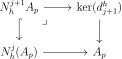
and we can form the pushout \(N_h^jA_p+ \ker (d^h_{j+1})\). The pullback square allows us to see that the map \(N^{j+1}_hA_p\to N^j_h(A_p)\) is split by the map \(1-s^h_{j+1}d^h_{j+1}\). Thus it follows that we get a split pushout of objects in \(D\)
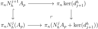
\(\ker (d^h_{j+1})\to \pi _n(N_h^jA_p+ \ker (d^h_{j+1}))\) is split monic, and the map \(\pi _nN^j_h(A_p)\to ]\pi _n(A_p)\) by assumption is monic, so the map from the pushout is too, meaning that the sequence below is exact, giving the result.
\[0 \to \pi _nN_h^{j+1}A_p\to \pi _nN_h^j(A_p)\oplus \pi _n\ker (d^h_{j+1})\to \pi _nA_p\]
□
-
Proof. \(\Gamma F_p(N_hA)\) is a filtered bisimplicial object. We can apply the diagonal \(d\) to it to obtain a filtered chain complex.
The associated spectral sequence has \(E_1\)-term \(\pi _{p+q}d(\Gamma N_h(A)[p])\) Thiere are natural isomorphism \(\pi _{p+q}d(\Gamma N_h(A)[p])\cong \pi _qd(\Gamma N_h(A))\cong \pi _q\Gamma N_h(A)\), and the chain complex \(\pi _*\Gamma N_h(A)\) by Lemma 7.7 can be identified with the complex \(N(\pi _q(A))\). Thus the \(E_2\)-term is as stated. □
-
Proof. The groups \(\pi _n(EA,0)\) are the homology groups of the Moore complex of \(H_nEf\). \(H_0Ef\) is the cokernel \(\oplus _{i\to j} f_i \xrightarrow {d_0-d_1}\oplus _{i}f_i\) which is \(\colim f\) by the formula for colimits. \(\pi _n(EA,0)\) is a \(\delta \)-functor, so it suffices to check it is coeffacable. To see this, given a projective \(M\) and \(i \in I\), define \(F_i(M)_j = \oplus _{i \to j}M\). We can produce surjections from sums these to anything, and \(EF_iM = M\otimes B(I_{/i})\) which has a terminal object, so it is contractible. □
7.2 Model structures
There are three closed model structures on bisimplicial sets:
-
• The Bousfield-Kan structure, which is another name for the projective model structure on \(\Fun (\Delta ^{op},\SSet )\).
-
• The Reedy structure, which in this case just agrees with the injective model structure on \(\Fun (\Delta ^{op},\SSet )\).
-
• The Moerdijk structure, in which a fibration or weak equivalence is a weak equivalence iff it induces an equivalence on diagonal simplicial sets.
For an \(n\)-truncated simplicial object there is a canonical comparison map \(\varphi : (i_n)_!Z\to (i_n)_*Z\). For each compsite \([k] \xrightarrow {\gamma } [n+1] \xrightarrow {\theta } [m]\) with \(k,m \leq n\) we get a commutative diagram
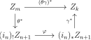
-
Proof. The horizontal map can be viewed as the degeneracies, and the vertical map can be viewed as the attaching maps. It is easy to check that this is equivalent to an \(n+1\)-truncated simplicial object by using the standard presentation of the simplex category. I think this is really just a property of Reedy categories. □
We define the \(n^{th}\) matching object \(M_nX\) of a simplicial object to be \((\cosk _{n-1}X)_n\), and dually, \(L_nX = (\sk _{n-1}X)_n\) is the \(n^{th}\) latching object. A way to remember it is that the \(n^{th}\) latching object is the degenerate \(n\)-simplces. There are natural maps \(L_nX\to X_n\to M_nX\).
Let \(C\) be a model category. Say that a map \(X\to Y\) of simplicial objects is a Reedy (trivial) fibration iff the maps \(X_n\to Y_n\times _{M_nY}M_nX\) are (trivial) fibrations for \(n\geq 0\).
-
Proof. We would like to show for example that a Reedy fibration \(X\to Y\) has the right lifting property with respect to an injective trivial cofibration \(U \to V\). We can show inductively that there exist compatible lifts on the \(n\)-truncations. In the inductive step, we are trying to lift
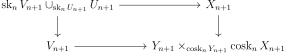
The left vertical map is a cofibration, and is a trivial cofibration by the proof of Proposition 7.2 since \(U\mapsto \sk _nU_{n+1}\) preserves weak equivalences and the model structure is left proper, so we can use the \(2\) out of \(3\) property on \(U_{n+1} \to U_{n+1}\cup _{\sk _{n}U_{n+1}}\sk _nV_{n+1}\to V_{n+1}\). Thus the desired lift exists. A similar argument works for trivial Reedy fibrations. □
-
Proof. The left adjoint of \(X\mapsto X_n\) is \(K \mapsto F_n(K):= \Delta ^n\tilde {\otimes }K\). A map \(K \to \cosk _{n-1}X_n\) is the same as a map \(i^*_{n-1}F_n(K) \to i^*_{n-1}X\), which is the same as a map \(\sk _{n-1}F_n(K) \to X\). Thus lifting the diagram
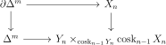
is the same as lifting
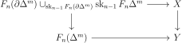
which we can do for an injective trivial fibration. The argument for fibrations is the same. □
Next, we study the Moerdijk model structure. The fibrations and weak equivalences are those that are after applying the diagonal. The diagonal functor \(d=d^*\) from bisimplicial sets to simplicial sets has a left adjoint \(d_!\) and a right adjoint \(d_*\)
-
Proof. \(d_!(\Delta ^n) = \Delta ^{n,n}\), and \(d^*d_!(\Delta ^n) = \Delta ^n\times \Delta ^n\), so it is contractible. There is a natural transformation \(d_!X\to *\tilde {\times }X\) determined by the maps \(\Delta ^{n,n} \to *\tilde {\times }\Delta ^n\) that forget the left simplex.
This natural transformation for \(\Lambda ^n_k\) is the projection
\[\coprod _{\beta \in \Lambda ^n_k}C_\beta \to \coprod _{\beta \in \Lambda ^n_k}*\]
where \(C_{\beta }\) is the subcomplex of \(\Lambda ^n_k\) generated by faces containing \(\beta \). Each \(C_{\beta }\) is contractible since it is a cone over the \(k^{th}\) vertex. Thus by Proposition 7.2, the map \(d^*d_!(\Lambda ^n_k) \to d^*(*\tilde {\times }\Lambda ^n_k) = \Lambda ^n_k\) is a weak equivalence, so \(d^*d_!(\Lambda ^n_k)\) is contractible too.
It follows that \(d_*\) sends fibrations to diagonal fibrations by Lemma 2.13. □
-
Proof. We would like to apply Proposition 4.12 for the adjunction between \(d^*\) and \(d_!\). To do this, we only need to check that any map with the left lifting property with respect to diagonal fibrations is a diagonal equivalence. But by Lemma 7.14, it has the left lifting property with respect to \(d_*(f)\) where \(f\) is a Kan fibration, so \(d\) applied to it has the left lifting property with respect to all Kan fibrations, and so is a trivial cofibration. □
7.3 Bousfield-Friedlander
There is a construction \(M_K(X)_p = \Hom _{\SSet }(K,X(*,p))\) generalizing \(M_n(X)_p = M_{\partial \Delta ^n}(X)_p\).
Given a bisimplicial set \(X\), we can form \(\pi _n(X)\), the simplicial set with \(m\)-simplices \(\coprod _{x \in X(m,0)}\pi _n(X_m,x)\). This is equipped with a natural map to \(X(*,0)\), and is a group object in \(\SSet _{/X(*,0)}\) for \(m\geq 1\). A vertex \(v\) in \(M_K(X)\) is a map \(v:K \to X(*,0)\), so we can define \(M_K(\pi _mX,v)\) to be \(\Hom _{\SSet _{/X(*,0)}}(v,\pi _m(X))\), which is a group for \(m\geq 1\).
\(M_K(\pi _mX,v)\) is a contravariant functor in the pair \(K,v\), and it sends colimits to limits since it is given by \(\Hom \) out of \(v\). Note that \(M_{\Delta ^n}(\pi _mX,v) =\pi _m(X_n,v)\). Let \(dv\) be the restriction of an \(n\)-simplex \(v\) to some (unspecified) horn \(\Lambda ^n_k\). It follows that there is an equalizer diagram
\[M_{\Lambda ^n_k}(\pi _mX,dv) \to \Pi _{i\neq k} \pi _m(X_{n-1},d_iv) \rightrightarrows \Pi _{i<j;i,j\neq k}\pi _m(X_{n-1},d_id_jv)\]
A projectively fibrant bisimplicial set \(X\) is said to satisfy the \(\pi _*\)-Kan condition if the maps \(d:\pi _m(X_n,v) \to M_{\lambda ^n_k}(\pi _m(X),dv)\) are surjective group homomorphisms for \(m\geq 1\). This is equivalent to the maps \(\pi _m(X) \to X(*,0)\) being Kan fibrations for all \(m\geq 1\).
Let \(\pi _0(Y)\) for a bisimplicial set be the simplicial set defined by \(\pi _0(Y)_n = \pi _0(Y_n)\).
-
-
1. A projectively fibrant bisimplicial set \(X\) satisfies the \(\pi _*\)-Kan condition if all of the vertical simplicial sets \(X_n\) are path connected.
-
2. If \(f:X\to Y\) is a vertical weak equivalence of projectively fibrant bisimplicial sets, then \(X\) satisfies the \(\pi _*\)-Kan condition iff \(Y\) does.
-
-
Proof. To show \((1)\), we observe that we can choose a path from our base point in \(X(n,0)\) to a degenerate one coming from \(X(0,0)\). This induces a change of basepoint isomorphism, so we only need to check the \(\pi _*\)-Kan condition at degenerate basepoints \(s(y)\). But the assignment \(n \mapsto \pi _m(X_n,s(y))\) is a simplicial group, hence a Kan complex.
To see \((2)\), observe that \(X \to Y\) is a vertical weak equivalence iff \(\pi _0X\to \pi _0Y\) is an isomorphism, and the diagrams
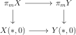
are pullbacks for \(m\geq 1\). Kan fibrations are stable under pullback, so if \(Y\) satisfies \(\pi _*\)-Kan, \(X\) does too.
Conversely suppose that the \(\pi _*\)-Kan condition holds for \(X\). To check it for \(Y\), we can do a change of basepoints to check it at basepoints in the image of \(X\). But then it follows from the \(\pi _*\)-Kan condition for \(Y\) since the homotopy groups agree. □
We say that an arbitrary bisimplicial set satisfies the \(\pi _*\)-Kan condition iff a projectively fibrant replacement does.
\(X\mapsto M_KX\) is right adjoint to \(Y\mapsto K\tilde {\times } Y\). Thus since \(K\tilde {\times }\Delta ^n\cup _{K\tilde {\times }\Lambda ^n_k}L\tilde {\times }\Lambda ^n_k \to L\tilde {\times }\Delta ^n\) is a Reedy trivial cofibration for an inclusion \(K \to L\), it follows that \(M_LX\to M_LY \times _{M_KY} M_KX\) is a Kan fibration when \(X \to Y\) is a Reedy fibration.
-
Proof. Let \(\Delta ^n\langle s_0,\dots ,s_r\rangle \) be the subcomplex of \(\Delta ^n\) generated by the faces \(d_{s_0}\dots d_{s_r}\), where \(0 \leq s_0 < s_1\dots < s_r\leq n\). We can use \(M^{(s_0,\dots ,s_r)}_n\) to denote \(M_{\Delta ^n\langle s_0,\dots ,s_r\rangle }\).
There is a pushout diagram
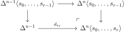
inducing a pullback square
Choose a sequence \(s_i\) with \(s_i \neq k\). The map \(d_{s_r}\) is a fibration since \(X\) is Reedy fibrant, so this is a homotopy pullback square. We can assume by induction that the map
\[\pi _m(M_{n}^{(s_0,\dots ,s_{r-1})}X,dx) \to M_{n}^{(s_0,\dots ,s_{r-1})}(\pi _mX,dx)\]
is an isomorphism, and similarly for \(M_{n-1}^{(s_0,\dots ,s_{r-1})}\). The map \(\pi _m(X_{n-1},dx) \to M_{n-1}^{(s_0,\dots ,s_{r-1})}(\pi _mX,dx)\) is a surjection since \(X\) satisfies the \(\pi _*\)-Kan condition, so the square is a pullback, showing that the result holds for \(s_0,\dots ,s_r\). A similar argument works for \(\pi _0\), only one has to observe that the inclusion of the fibres of the vertical maps in the pullback square is injective on \(\pi _0\) since the maps are surjective on \(\pi _1\).
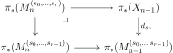
is a pullback square from Proposition 4.32. □
-
Lemma 7.18. Suppose that \(X\) and \(Y\) are Reedy fibrant bisimplicial sets which satisfy the \(\pi _*\)-Kan condition and that the bisimplicial set map \(f:X\to Y\) is a Reedy fibration. Suppose further that the induced simplicial set map of vertical path components \(\pi _0X\to \pi _0Y\) is a Kan fibration. Then the map \(f\) is a horizontal pointwise Kan fibration.
-
Proof. Being a horizontal pointwise Kan fibration is equivalent to the maps \(X_n \to Y_n \times _{M_{\Lambda ^n_k}Y}M_{\Lambda ^n_k}X\) being surjective simplicial set maps. But since \(f\) is a Reedy fibration, this map is a Kan fibration, so it suffices to show it is surjective on \(\pi _0\). By Lemma 7.17, this is equivalent to the map
\[\pi _0X_n\to \pi _0Y_n\times _{M_{\Lambda ^n_k}\pi _0Y}M_{\Lambda ^n_k}\pi _0X\]
being surjective, which is true since \(\pi _0X\to \pi _0Y\) is a Kan fibration. □
-
Proof. The cofibration \(d^*\Lambda ^n_k \to d^*\Delta ^n = \Delta ^{n,n}\) factors as a composite \(d^*\Lambda ^n_k\subset \Lambda ^n_k\tilde {\times }\Delta ^n\subset \Delta ^n\tilde {\times }\Delta ^n\). By the proof of Lemma 7.14, The first map is a vertical Reedy cofibration, and the second has the left lifting property with respect to horizontal pointwise fibrations. □
A map of bisimplicial sets is pointwise homotopy cartesian if it is homotopy cartesian in each degree.
-
Proof. WLOG, we can assume that the map \(p:Y \to W\) is a Reedy fibration and \(W\) is Reedy fibrant. By Lemma 7.18 and Lemma 7.19, \(p\) is then a diagonal fibration. Thus the square
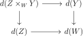
is homotopy cartesian, so since the map \(X \to Z\times _W Y\) is a weak equivalence, so is the square we wanted. □
-
Proof. First, when \(k = 0\), \(\pi _0(d(X))\) is the coequalizer of the two boundary maps \(\pi _0(X_1) \to \pi _0(X_0)\), so this follows. Now, we can induct on \(k\) and use Corollary 7.21 to get the result. □
7.4 Theorem B and Group Completion
Given a map \(f:E \to B\) of simplicial sets, there is a functor \(f^{-1}:\Delta /B \to \SSet \) where \(\Delta /B\) is the category of simplices of \(B\), taking a simplex to its fibre product under \(f\).
\(B\) is the colimit in \(\SSet \) of its simplices, and pulling back along \(f\) is a left adjoint, so we can identify \(\lim _{\Delta /B}f^{-1} = E\).
-
Proof. Let \(Ef^{-1}_m\) denote the category of \(m\)-simplices in \(f^{-1}\). Because \(\lim _{\Delta /B}f^{-1} = E\), the path components of this agree with \(E_m\). Given an \(m\)-simplex \(x \in E_m\), let \(Ef^{-1}_{m,x}\) denote the path component corresponding to \(x\). \(x\) viewed as an object of this category is a terminal object. It follows that the map \(Ef_m^{-1} \to E_m\) is a weak equivalence of simplicial sets, so that \(Ef^{-1} \to E\) is a weak equivalence, where \(E\) is a constant simplicial set. □
-
Proof. By applying Lemma 7.23 to the identity functor, we see that the constant bisimplicial object \(B\) is equivalent to \(E1_B^{-1}\). \(1_B^{-1}\) is equivalent to the constant functor taking value \(*\). Note that the homotopy colimit and diagonal agree on the constant bisimplicial object \(B\), and so applying both of these functors to the zig-zag of equivalences gives the desired result. □
Given a map \(f:E \to B\) and a projective object \(M\) in a projectively generated abelian category, by Lemma 6.14 \(M[Ef^{-1}] \to M[E]\) is a weak equivalence.
There is thus a convergent spectral sequence with \(E_2\)-term \(\pi _p\pi _q(M[Ef^{-1}])\) converging to \(H_{p+q}(E;M)\). Now suppose that \(f\) is a Kan fibration. Then given a path \(\sigma \) in \(B\), the induced map \(f_*\) on the fibres is an equivalence. Suppose \(\pi _1(B)\) acts trivially on \(H_q(F;M)\). Then for any \(\sigma \in B_n\), \(\pi _q(M[f^{-1}\sigma ])\) is naturally isomorphic to \(H_q(F;Ef^{-1})\). It follows that the \(E_2\)-term of the spectral sequence in this case is the same as \(H_p(EB_{/\Delta };H_q(F;M))\). But by Corollary 7.24, this is just \(H_p(B;H_q(F;M))\).
-
Construction 7.24.1 (Serre Spectral Sequence). Consider a fibration \(E \to B\) with \(\Pi _1(B)\) acting trivially on \(H_q(F;M)\), where \(M\) is a projective object in an abelian category. There is a natural first quadrant spectral sequence with \(E_2\)-term \(H_p(B;H_q(F,M))\) converging to \(H_{p+q}(E;M)\).
Of course, this is weaker than the most general form of the Serre spectral sequence.
An important ingredient in the proof of Theorem B is the following lemma.
-
Proof. Note that applying the diagonal homotopy colimit to the natural transformation \(X \to *\), there is a (not homotopy) pullback diagram as above. To see it is a homotopy pullback diagram, we will find a factorization \(* \to U \to BI\) such that the first map is a trivial cofibration, the second is a fibration, and the map \(X(j) \to U\times _{BI} Y\) is a weak equivalence. Pullbacks preserve colimits, which are stable under filtered colimits, so it suffices to check by the small object argument that \(\Lambda ^n_k\times _BI Y \to \Delta ^n\times _{BI}Y\) is an equivalence for any simplex \(\sigma \) in \(BI\).
\(\Delta ^n\times _{BI}Y\) can be identified with the diagonal homotopy colimit of the composite functor \(\Delta ^n\xrightarrow {\sigma }I \xrightarrow {X}S\). The map \(\Lambda ^n_k\times _BI Y \to \Delta ^n\times _{BI}Y\) is the diagonal of the map between bisimplicial sets
\[ \coprod _{k_0\rightarrow \dots \rightarrow k_r \in \Lambda ^n_r} X\sigma (k_0) \to \coprod _{k_0\rightarrow \dots \rightarrow k_r \in \Delta ^n} X\sigma (k_0)\]
But by the assumption on \(X\), the natural transformation from \(\Delta ^n \to \{0\} \to \Delta ^n\) to the identity induces an equivalence on the bisimplicial sets in the map above to those where \(\sigma (k_0)\) is replaced with \(\sigma (0)\). But the induced map between the diagonals of these bisimplicial sets is the map \(\Lambda ^n_k \times X\sigma (0) \to \Delta ^n\times \sigma (0)\), which is an equivalence.
□
-
Proof. The assignment \(y \mapsto NF_{y/}\) is a functor \(D \to \SSet \), determining a bisimplicial set with \((n,m)\) simplices \(\coprod _{y_n\to \dots \to y_0}(NF_{y_0/})_m\). In otherwords, it is strings of arrows
\[ y_n \to \dots \to y_0 \to F(x_0) \to \dots \to F(x_m)\]
Forgetting \(F(x_0)\to \dots \to F(x_m)\) gives a diagram of bisimplicial sets
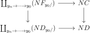
In the horizontal direction the top horizontal maps above are given by
\[\coprod _{x_0\to \dots \to x_m} (D_{F(x_0)/})^{op} \to \coprod _{x_0\to \dots \to x_m} *\]
which is clearly an horizontal equivalence. The bottom horizontal map is a horizontal equivalence for the same reason.
Thus it suffices to we can replace the Cartesian diagram in the theorem statement with the left vertical map above. But \(ND_{y/} \simeq *\) and \(\coprod _{y_n\to \dots \to y_0}(ND_{y_0/}) \simeq \coprod _{y_n\to \dots \to y_0}*\) because the categories have terminal objects. Thus we are reduced to showing that the bisimplicial set diagram
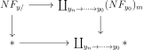
is Cartesian on diagonals, but this follows from Lemma 7.25. □